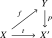
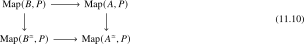

Definition 11.4.1 (Induction principle of \(n\)-truncation). Let \(X\) be an anima. We say that a map \(t\colon X\to X'\) is an \(n\)-approximation if it satisfies the following induction principle of \(n\)-truncation:
• For every \(n\)-truncated map \(p\colon Y\to X'\) of animae, every section of \(X\times_{X'} Y \to X\) can be lifted to a section of \(Y\to X'\). Explicitly this means that for every commutative triangle

where \(p\) is \(n\)-truncated we have a section \(f'\colon X'\to Y\) of \(p\) and an identification \(f=f't\) over \(X'\).
If additionally \(X'\) is \(n\)-truncated, we say that \(t\) exhibits \(X'\) as the \(n\)-truncation of \(X\). If an \(n\)-truncation of \(X\) exists, we denote it by \(t\colon X\to \truncation{n}{X}\) and its action on objects by \(t\colon x\mapsto [x]\).
Remark 11.4.2. A more type-theoretic way to think about the induction principle of \(n\)-truncation is as follows: Whenever we have a family of \(n\)-truncated animae \(Y_{x'}\) indexed by \(x': X'\), to produce a section \(x' : X' \mapsto f'(x') : Y_{x'}\) it suffices to do so on terms of the form \(x' = tx\), by specifying the value \(f'(tx)\coloneqq f(x)\).
Lemma 11.4.3. In the setting of Definition 11.4.1, assume that we have two lifts \(f'_1,f'_2\colon X'\to Y\) of the section \(f\). Then we have an identification \(h' : f'_1=f'_2\) with \(h't = \id_f\).
Proof
Consider the family \(Z \colon (x': X')\mapsto Y_{x'}(f'_1 x', f'_2 x')\). If \(n=-2\), the fibers of \(Y\to X'\) are contractible, and so are the fibers of \(Z\to X'\). If \(n\geq-1\), each \(Z_{x'}\) is \((n-1)\)-truncated and hence \(n\)-truncated by Lemma 11.3.7. Thus in every case the projection \(Z \to X'\) is \(n\)-truncated. Moreover, for each \(x : X\) we have \(h(x) := \id_{f(x)} : Y_{x}(f x, f x) = Z(t x)\) (using that \(f'_i t x = f x\)). Therefore, we may apply the induction principle to \(Z\to X'\) to obtain a lift \(h'\colon X'\to Z\) of \(h\), which is precisely the datum of an identification \(f'_1 = f'_2\) extending the identity of \(f\).
Exercise 11.4.4. Show that \(n\)-truncation of an anima is unique if it exists.
Lemma 11.4.5. A map \(X\to X'\) is an \(n\)-approximation of animae if and only if for every \(n\)-truncated map \(Y\to X'\) of animae, the canonical map \begin{equation} \Map_{X'}(X',Y)\to \Map_{X'}(X,Y) \tag{11.4}\end{equation} is an equivalence.
Proof
For the forward direction, fix a section \(f\colon X\to Y\) over \(X'\). The induction principle gives a lift \(f'\colon X'\to Y\), so the fiber of the displayed map over \(f\) is inhabited. Any two such lifts are identified over \(f\) by Lemma 11.4.3. Hence this fiber is a proposition by Lemma 10.1.9, and is therefore contractible. All fibers of the displayed map are contractible, so it is an equivalence.
The converse is trivial because being an \(n\)-approximation just requires the map (11.4) to have a section.
Remark 11.4.6. Matching the terminology of Definition 10.3.1, the \(-1\)-truncation and \(0\)-truncations are also called propositional truncation and set truncation, respectively.
We conclude by defining the local analog of truncation.
Definition 11.4.7. A functor \(t\colon C\to C'\) is called a local \(n\)-approximation if for every locally \(n\)-truncated functor \(p\colon D\to C'\), the induced map \begin{equation} \Map_{C'}(C',D)\to \Map_{C'}(C,D) \tag{11.5}\end{equation} is an equivalence. If \(C'\) is additionally locally \(n\)-truncated, then we say that \(t\) exhibits \(C'\) as the local \(n\)-truncation of \(C\), and write \(C'=\localtrunc{n}{C}\).
11.4.1 Propositional truncation
Let us refer to \((-1)\)-truncation as propositional truncation. We will now show that the Čech nerve construction from Section 11.1 computes the propositional truncation.
Lemma 11.4.8. A map of animae \(t\colon X\to X'\) is an \((-1)\)-approximation if and only if \(t\) is a cover.
Proof
In the case \(n=-1\) the induction principle of the \(n\)-truncation can be simplified by recalling that an \((-1)\)-truncated map has a section if and only if it is an equivalence (and any two sections are equal in that case), see Lemma 1.6.24. Thus in the case \(n=-1\), the condition of Definition 11.4.1 can be reformulated as saying that an embedding \(Y\to X'\) is an equivalence whenever the pulled-back map \(X\times_{X'}Y \to X\) is an equivalence. This is equivalent to \(X\to X'\) being a cover by Proposition 11.2.12.
Corollary 11.4.9 (Existence of propositional truncation). For every anima \(X\), the map \(X\to \abs{\check C(X)}\) is a propositional truncation. (Here the Čech nerve is computed in any universe in which \(X\) is small.)
Proof
The anima \(\abs{\check C (X)}\) is a proposition by Theorem 11.1.11 and the map \(X\to \abs{\check C(X)}\) is a cover by Proposition 11.2.4.
As a consequence of the corollary, the \((-1)\)-truncation \(\truncation{-1}{X}\) exists and is given by \(\abs{\check{C}(X)}\).
Definition 11.4.10. Let \(X\) be an anima. We say that there merely exists an object of \(X\) if \(\truncation{-1}{X}\) is inhabited.
Lemma 11.4.11. A map \(f\colon Y\to X\) of animae is a cover if and only if for each \(x : X\) there merely exists a \(y : Y\) with \(f y = x\), i.e., if we have an inhabitant of \[\prod_{x:X}\truncation{-1}{\sum_{y:Y} fy = x}.\]
Proof
If \(x : X\) is a term defined in context \(\Gamma\) (with \(\Gamma\) an anima), we see that \(\truncation{-1}{\sum_{y:Y} fy = x}\) literally is \(\abs{\check C(x^*(f))}\) for \(x^*(f)\) the pullback of \(f\) along \(x\colon\Gamma\to X\). Therefore, if we have a term in \[\prod_{x:X}\truncation{-1}{\sum_{y:Y} fy = x},\] we have a term in \(\abs{\check C(x^*(f))}\) for all \(x\), in particular for \(x\) the universal term of \(X\), also known as the identity. This means that \(\abs{\check C(Y/X)}\hookrightarrow X\) has a section and is thus an equivalence. The converse follows from the fact that covers are stable under base change.
Remark 11.4.12. What the proof of Lemma 11.4.11 actually does is the construction of a fiberwise equivalence \[ \abs{\check C(Y/X)}_x\iso \truncation{-1}{\sum_{y:Y} fy = x} \] in context \(x : X\). Both sides are propositions in that context, so this equivalence is unique.
Proposition 11.4.13. Propositional truncation \(X\mapsto \truncation{-1}{X}\) yields a left adjoint to the inclusion \(\Prop\hookrightarrow \An\).
Proof
By the pointwise construction of adjoints and directed univalence we need to show the following: for each anima \(X\) there exists a proposition \(X'\) and a map \(t\colon X\to X'\) such that for all propositions \(Z\) the induced map \begin{equation} \Map(X',Z)\to \Map(X,Z) \tag{11.6}\end{equation} is an equivalence. Choosing \(X\to X'\coloneqq \truncation{-1}{X}\) to be a propositional truncation, this is a special case of Lemma 11.4.5 for the constant family \(Y\coloneqq X'\times Z\to X'\).
11.4.2 Set and poset truncation
We saw that one can construct propositional truncations using the Čech nerve. We next give a criterion for the universal property of poset truncation in terms of covers on objects and mapping animae.
Lemma 11.4.14. Let \(p\colon A\to B\) be a functor that is a cover on objects. For every poset \(P\), the induced functor \begin{equation} \Fun(B,P)\to\Fun(A,P) \tag{11.7}\end{equation} is fully faithful. Moreover a functor \(f\colon A\to P\) lies in the essential image (i.e. factors through \(p\)) if and only if it satisfies \(f(a)\leq f(a')\) whenever we have an arrow \(pa\to pa'\) in \(B\).
Proof
• To establish fully faithfulness, by Corollary 10.3.8, it suffices to show for all \(f,g\colon B\to P\) the logical equivalence between
• for all \(b:B^\simeq\) we have \(f(b)\leq g(b)\) and
• for all \(a:A^\simeq\) we have \(f(pa)\leq g(pa)\),
The forward direction is immediate by restriction. The converse follows from the induction principle for propositional truncation which holds because \(p^\simeq\colon A^\simeq\to B^\simeq\) is a \((-1)\)-approximation by assumption. Indeed it tells us that to show the proposition \(f(b)\leq g(b)\) for all objects \(b:B^\simeq\) it suffices to do so for those of the form \(b=pa\).
• Let \(f\colon A\to P\) satisfy \(fa \leq fa'\) whenever we have an arrow \(pa\to pa'\). We have to show that \(f\) factors through \(p\). Conversely, any factorization through \(p\) has this property by functoriality.
We start with the special case where \(P=S\) is a set, and where \(A=A^\simeq\) and \(B=B^\simeq\) are animae. Let \(R\to B\times S\) be the fiberwise \(-1\)-truncation of the map \((p,f)\colon A\to B\times S\); in other words, \(R\) consists of those pairs \((b,s)\) for which there merely exists an \(a:A\) with \(pa= b\) and \(fa = s\). We claim that the composite \begin{equation} R\subseteq B\times S\to B \tag{11.8}\end{equation} is an embedding. To show this we have to construct, for any \(b:B\) and any two \((b,s),(b,s') : R_b\), an equality \(s=s'\) in \(S\); but since \(S\) is a set, hence \(S(s,s')\) is a proposition, mere existence is enough. By definition of \(R\) there merely exist \(a,a' : A\) with \(fa=s\) and \(fa'=s'\) but also \(pa = b = pa'\). By the assumption on the map \(f\), we thus obtain \(s= fa = fa' = s'\) as claimed. Now we may use that every cover is a \((-1)\)-approximation (Lemma 11.4.8) to obtain the dashed filler
 whose second component yields the desired factorization of \(f\) through \(p\).
whose second component yields the desired factorization of \(f\) through \(p\).• To prove the general case consider the commutative square

where all maps are embeddings; the horizontal ones by what we proved earlier, and the vertical ones by Lemma 10.3.7. Thus it suffices to show that \(f^\simeq \colon A^\simeq \to P^\simeq\) factors through \(p^\simeq\colon A^\simeq\to B^\simeq\) and that the resulting map \(g^\simeq\colon B^\simeq \to P^\simeq\) extends to \(g\colon B\to P\). We have the first fact by applying the step we already proved; indeed, \(P^\simeq\) is a set and \(A^\simeq,B^\simeq\) are animae. For the second step we have to show \(g(b)\leq g(b')\) whenever we have an arrow \(b\to b'\) in \(B\) (by Lemma 10.3.7). Since \(p^\simeq\) is a cover, so is \(p^\simeq\times p^\simeq\colon A^\simeq\times A^\simeq \to B^\simeq\times B^\simeq\). It is therefore a \((-1)\)-approximation, and it suffices to show this in the case where \(b=pa\) and \(b'=pa'\) for \(a,a' :A^\simeq\), in which case it is precisely the assumption on \(f\).
Corollary 11.4.15. Let \(p\colon A\to B\) be a functor which is a cover both on objects and on each mapping anima. Then the induced restriction functor \begin{equation} \Fun(B,P)\to \Fun(A,P) \tag{11.11}\end{equation} is an equivalence for each poset \(P\).
Proof
By Lemma 11.4.14, restriction is fully faithful. Let \(f\colon A\to P\). To apply the essential-image criterion, fix an arrow \(u\colon pa\to pa'\) in \(B\). Since \(A(a,a')\to B(pa,pa')\) is a cover, there merely exists a lift of \(u\) to an arrow \(a\to a'\) in \(A\). Functoriality of \(f\) then gives \(f(a)\leq f(a')\). This target is a proposition, so mere existence of the lift suffices. Consequently every \(f\) lies in the essential image, and restriction is an equivalence.
Proposition 11.4.16. A functor which is a cover on objects and on mapping animae is a local \((-1)\)-approximation.
Proof
Let \(p\colon A\to B\) be such a functor, let \(q\colon D\to B\) be locally \((-1)\)-truncated, and fix \(s\colon A\to D\) over \(B\). Write \(D_s\) for the full essential image of \(s\). For \(a,a' : A^\simeq\), the composite \[ A(a,a')\longrightarrow D(sa,sa')\longrightarrow B(pa,pa') \] is a cover and the second map is an embedding. By cancellation for covers, the second map is also a cover, hence an isomorphism. Since \(A^\simeq\to D_s^\simeq\) is a cover, this proves that \(D_s\to B\) is fully faithful. It is essentially surjective because \(p\) is, so it is an equivalence. Its inverse extends \(s\) to a section of \(q\).
Every extension has full essential image \(D_s\), since \(p\) is essentially surjective. It therefore factors uniquely through \(D_s\). The equivalence \(D_s\to B\) now makes the anima of extensions, with their identification on \(A\), contractible. This proves the relative universal property of Definition 11.4.7.
Remark 11.4.17. Every category \(C\) admits a poset truncation: a functor \(C\to\posetrunc{C}\) to a poset such that restriction induces an equivalence \[ \Fun(\posetrunc{C},P)\simeq\Fun(C,P) \] for every poset \(P\). We will prove this by giving an explicit construction in Construction 12.3.22, using the Yoneda embedding. For an anima \(C\), this also gives its set truncation, as we will show in Corollary 12.3.24.